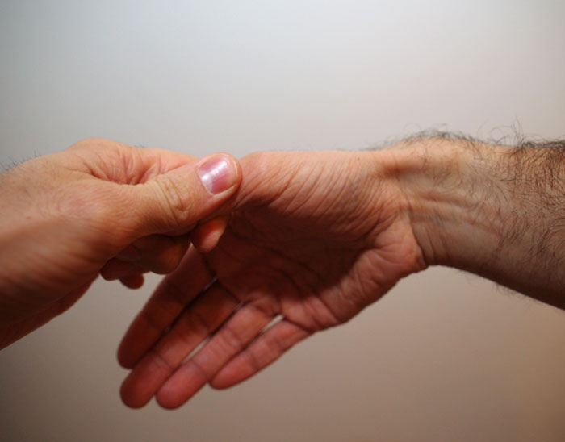

3 Övre extremiteten
3.1 Axeln
3.1.1 Klavikelfraktur
Vanligast hos yngre män. 75% drabbar den mellersta delen, ett fåtal den mediala delen.
Uppstår oftast efter fall mot armen, 15% genom slag. Förekommer som förlossningsfraktur.
Kliniska drag/Diagnos
Fall/direkttrauma med smärta i klavikeln samt eventuellt hematom och svårigheter att lyfta armen ger misstanke.
Rtg. verifierar diagnos. Vid mediala frakturer kan DT vara indicerad för att utesluta fragment och felställning >1 benbredd.
Behandling
I allmänhet mitella eller liknande som stödjer/håller uppe armen. Förband är endast i smärtlindrande syfte.
Op-indikationer:
- Fraktur i mellersta delen med intermediärfragment och förkortning.
- Fraktur i laterala/mediala delen med >1 benbredds dislokation.
- Risk för hudpenetration
Prognos
Läker i allmänhet utan resttillstånd. Frakturer i mellersta delen med intermediärfragment och förkortning >2cm kan ge framskjuten skuldra, utskjutet skulderblad, smärta och handparestesier. Andra frakturer med dislokation >1 benbredd kan ge pseudartros.
3.1.2 Skapulafraktur
Ovanliga bland skulderfrakturer (~3%). Orsakas oftast av högenergiskador.
3.2 Överarmen
3.2.1 Diafysär humerusfraktur
Uppstår oftast till följd av direkt våld men ses även vid t.ex armbrytning och polisgrepp.
Eventuell felställning beror på frakturens lokal. Distala och proximala frakturer ger ofta mer felställning pga muskelfästen som drar i fragment.
Görs enl. AO/OTA och delas in i ABC samt grad 1-3:
A — 2-fragmentsfrakturer
B — 3-fragmentsfrakturer
C — Komminutfrakturer
Siffra (1-3) beror på svårighetsgrad.
N. radialispåverkan är relativt vanligt då nerven går nära diafysen. Även tryck från hematom och gips kan påverka den! De flesta radialispareser är dock övergående.
Kliniska drag/Diagnos
Fraktur bör misstänkas hos en patient som klagar på smärta/nedsatt rörelseförmåga i överarmen efter trauma.
Vid undersökning ses ofta direkt/indirekt smärta, felställning och frakturkrepetationer.
Distalstatus ska alltid ingå i undersökningen!
Diagnosen bekräftas med röntgen av hela humerus.
Behandling
Som regel kan diafysära humerusfrakturer behandlas konservativt.
Gipsskena samt ortos och slynga kombinerat med armens egen vikt kan ofta hålla den rät och hindra felställning samt förkortning.
Efter ca 4 veckor med gips kan slutbehandling ske med ortos som omsluter humerus.
Indikationer för kirurgi är:
- Vinkelfelställning > 20 grader
- Förkortning > 3cm
- Öppen fraktur
- Kärlskador
- Multipla frakturer (Där kirurgisk stabilisering underlättar mobilisering)
- Patologisk fraktur
- Non-union av äldre fraktur
Operativ behandling är oftast märgspik eller plattfixation.
Vid radialispares efter sluten fraktur kan nervfunktion väntas återkomma inom 3 månader. Explorativ kirurgi utförs endast efter denna tidsgräns samt neurofysiologisk undersökning (Görs alltid öppen fraktur som opereras).
Prognos
Läker i genomsnitt på 12v.
Långa och sneda frakturer(inkl. komminut) läker bättre än korta, tvära.
<10% kräver kirugisk behandling. Är frakturen rörlig efter 4 månader klassas den som non-union.
3.3 Armbågen
3.3.1 Olekranonfraktur
Olekranonfrakturer ingår i proximala ulnafrakturer tillsammans med Koronoidfraktur (Kapitel 3.3.2) och proximal skaftfraktur. Dessa uppkommer oftare tillsammans med andra skador jämfört med olekranonfrakturer.
- Extraartikulära — ca 10%, proximal avulsionsfraktur (~avlösning av triceps)
- Intraartikulära — Indelas enl. Morrey
- Typ I — Odislocerad
- Typ II — Dislocerad, stabil
- Typ III — Dislocerad, instabil
- Utgör ca 15% av fall. Engagerar proc. coronoideus och kollateralligament, mycket instabil.
Kliniska drag/Diagnos
Som vid andra armbågsfrakturer. Pat. saknar förmåga att extendera i armbågsleden. Röntgen bekräftar diagnos.
Behandling
Odislocerad typ I-fraktur: Gips i 3 veckor. En dislocering på ett par mm medför behov av operation!
Typ II-fraktur: Kan behandlas konservativt hos patient med låga-måttliga funktionskrav. (Dvs saknar behov av att aktivt extendera armbågen)
Typ III-fraktur: Opereras alltid med reposition och fixation. Cerklage, eller stift+cerklage och platta kan användas.
Prognos
Med adekvat behandling ses ofta god funktion efter läkning med viss kvarstående rörelseinskränkning (ffa i extension).
3.3.2 Koronoidfraktur
TODO: detta
Enl. Reagan & Morrey
Typ I: Endast spetsen av proc. coronoideus avlöst.
Typ II: Frakturen omfattar <50% av prc. coronoideus.
Typ IIIA: >50% av proc. coronoideus utan luxation.
Typ IIIB: >50% av proc. coronoideus med luxation.
Kliniska drag/Diagnos
Undersök, luxation? Distalstatus!
Behandling
Typ I och II: Inget gips, ortos eller slynga. Rörelseträning!
Typ III: A -> Oftast kirurgisk behandling, B -> Alltid kirurgisk behandling. Reponering och fixation med (oftast) skruv. Se även kapitel 3.3.3
3.3.3 Armbågsluxation
Kliniska drag/Diagnos
Undersök armen, distalstatus med särskilt fokus på n. ulnaris. Slätröntgen bekräftar diagnos och eventuell samtidig fraktur.
Behandling
Om samtidig fraktur krävs ev. operation.
Om ej fraktur föreligger reponeras dorsal luxation enligt:
- Smärtlindra, morfin 5mg, midazolam 0.5-1mg
- Håll armbågen flekterad i 45 grader, dra i underarm samtidigt som överarmen hålls still av assistent
- Om ovanstående misslyckas kan man trycka med tummar mot olekranån från dorsalsidan.
- Undersök efter reponering:
- Distalstatus
- Kontrollera stabilitet: extendera, flektera, pronera och supinera. Om allt (även passiv extension) kan göras utan reluxation är armbågen stabil.
- Gipsa — Lång, dorsal skena, 90-100grader i armbågen med lite pronation.
- Återbesök efter 1 vecka
- Kontrollröntgen, avgipsning, stabilitetskontroll. Om instabilitet föreligger gipsas armen på nutt i 2-3 veckor med återbesök därefter. Om armen är stabil skrivs remiss till fysioterapeut.1
Prognos
Reluxationer är vanligt, 50% får kvarvarande rörelseinskränkning.
3.4 Underarmen
3.4.1 Diafysär underarmsfraktur
Enligt AO/OTA:
A: Enkla tvågragmentsfrakturer
B: Frakturer med fjärilsformat/triangulärt intermediärfragment
C: Komplexa, komminuta frakturer
Kliniska drag/Diagnos
Patienter söker med något/några av: smärta, svullnad, rotationssmärta, felställning.
Vid undesökning finns ofta tydliga frakturtecken. Distalstatus ska alltid ingå!
Behandling
Slutna frakturer utan avvikande distalstatus behandlas med gipsskena och planerad kirurgi.
Målet med behandling är exakt återställande gällande längd, rotation och böjning hos radius och ulna.
En minimalt dislocerade frakturer kan slutbehandlas med gips men opereras ofta för att snabba på mobiliseringen.
Även isolerad ulnafraktur fixeras i allmänhet med platta.
Rörelseträning kan i allmänhet påbörjas direkt men gipsskena används ofta i 2 veckor för smärtlindring.
Tyngre belastning undviks tills röntgenologisk läkning nåtts.
Prognos
Läkningstiden är ca 3-4 månader i normalfallet. Armkraften kan räknas vara nedsatt långt efter skadan. Förutsatt att läkning sker utan felställning normaliseras funktionen i allmänhet med tid.
Vid lägre än 50 graders supination/pronation upplevs ofta begränsningar i vardagen.
3.4.2 Monteggia-fraktur
Ulnafraktur där dislokation lett till ligamentskada vilket ger dislokation hos caput radii i radiohumeralleden.
Radius kan disloceras ventralt, lateralt eller dorsalt. Klassifikation sker enligt Bado
Om även caput radii är frakturerat benämns frakturen monteggiaekvivalent.
Kliniska drag/Diagnos
I princip samma symtom som vid diafysär underarmsfraktur (Kapitel 3.4.1)
Röntgen omfattar armbågsled och handled.
Behandling
Alla monteggiafrakturer behandlas med öppen kirugisk reposition och fixation. Efter att ulna fixerats reponeras ofta caput radii utan vidare åtgärd. Reparation av ligament behövs då sällan.
Vid monteggiaekvivalent fraktur fixeras även caput radii.
Prognos
Vid korrekt reposition blir patienten oftast besvärsfri efter läkning som tar 3-4 månader.
3.5 Handled
TODO: Initial handläggning och typer
3.5.1 Distal radiusfraktur
Den vanligaste av alla frakturer. Allra vanligast hos barn och postmenopausala kvinnor men förekommer hos alla.
Uppkommer oftast efter fall mot utsträckt hand.
Hos barn sker frakturen oftast i anslutning till epifysplattan.
- Colles — Vanligast, fraktur genom metafysen med dorsalbockat fragment.
- Smith — Som Colles men volarbockad.
- Barton — Frakturen löper genom leden.
- Chauffeur — Avulsion av proc. styloideus radii. Kan ge allvarliga ligamenskador.
- Dye punch — Ledytan frakturerar och trycks in mot metafysen.
Kraftigt dorsalbockade frakturer ger alltid skador mot distala ulna.2
Symtom/Diagnos
Fall mot handen med smärta/svullnad inger misstanke. Även skador i ossa carpi bör övervägas. Rtg bekräftar diagnos.
DT kan övervägas vid komminuta frakturer samt vid ledengagemang inför operation.
Behandling
Odislocerad fraktur i ung vuxen utan osteoporos:
Gipsskena i 4-5 veckor, Rtg-kontroll efter 7-10 dagar.
Chauffeur-fraktur bör kontrolleras efter utläkning även om den är helt odislocerad!
Även något dislocerade frakturer kan gipsas. Frakturer som varit volart dislocerade kräver volart stöd och vice versa.
Hos en inidivid med höga funktionskrav bör exakt reposition eftersträvas. Om detta inte kan uppnås med gips är kirurgi ofta indicerat.
Indikationer för öppen reposition:
- Initial dorsalbockning >30 grader
- Smiths fraktur
- Intraartikulära frakturer med >1mm skillnad i ledyte mellan fragment
- Frakturer som engagerar ossa carpi
- Felställd fraktur med samtidigt dislocerad ulnafraktur
- Bilaterala frakturer
- Frakturer med uttalad instabilitet kring distala ulnaänden.
Hos individer med låga funktionskrav är operation sällan indicerad.
Prognos
Prognos efter okomplicerad fraktur/läkning är god. Höga funktionskrav och komplex fraktur ökar risk för bestående kliniskt relevanta symtom.
CPRS ger uttalad svullnad av handen, känselstörning, förändrad temperaturreglering och ökad behåring.
Risken ökar med långvarig immobilisering.
3.5.2 Skafoideumfraktur
Den vanligaste frakturen bland ossa carpi.
Kliniska drag/Diagnos
Bör misstänkas hos samma grupp som ovan.
Kliniska tecken:
- Palpationsöm i fossa tabatiére
- Palpationsöm över tuberositas scaphoideum
- Ömhet vid axialkompression av tumme
- Ömhet vid radialdeviation handled
Diagnos ges via röntgen där skafoideumprojektioner bör begäras.
Vid negativt röntgenutfall men klinisk bild som pekar mot fraktur bör skafoideumgips sättas och röntgen göras om efter en vecka. MR kan ofta påvisa fraktur snabbare än rtg i dessa fall.
Behandling
- Avulsionsfraktur av tuberositas scaphoideum:
- Elastisk linda, avtagning i hemmet efter 2v.
- Odislocerad proximal-/midjefraktur:
- Skafoideumgips, återbesök efter 4v. Undvik riskbelastning i 2v efter avgipsning.
- Dislocerad proximal-/midjefraktur(>1mm):
- Oftast skruvfixation.
Prognos
Sämre ju mer proximal fraktur. Opererade frakturer läker i allmänhet komplikationsfritt.
3.5.3 Övriga ossa carpi
TODO: Detta
3.5.4 Karpal luxation/instabilitet
Alltid resultat av högenergitrauma.
Kliniska drag/Diagnos
Smärta, svullnad, felställning i handleden.
N. medianus är ofta påverkad.
Dessa skador är inte sällan svårupptäckta röntgenologiskt. DT kan här komplettera diagnostiken.
Behandling
Perilunär luxation kan (ibland) reponeras slutet men måste fixeras kirurgiskt. N. medianus måste dekomprimeras vid påverkan.
Prognos
Leder alltid till inskränkt rörlighet med stor risk för artrosutveckling. Snabb handlägnning ger minskad risk för n. medianus-påverkan.
3.5.5 De Quervains tendinit
Orsakas av svullnad i abductor pollicis longus-/extensor pollicis brevis-senan.
Detta kan ske vid blödning/trauma och akut tenosynovit. En vanlig patientgrupp är kvinnor som börjat amma och då använder handen på ett nytt sätt. Tillståndet kan komma och försvinna relativt plöstligt.
Kliniska drag/Diagnos
Klinisk diagnos:
- Ömhet över det första dorsala senfacket
- Positivt finkelsteins test

Tumbasartros kan uteslutas mha rtg vid osäkerhet kring diagnos.
Behandling
- Ortos som hindrar tum-/handledsrörelser
- Kortisoninjektion i senskidan
- Vid recidiv/ej tillfredssällande resultat -> operation
Prognos
Icke-kirurgisk behandling ger ofta goda resultat. Kirurgi leder nästan alltid till besvärsfrihet.
3.5.6 Ganglion
TODO: Detta